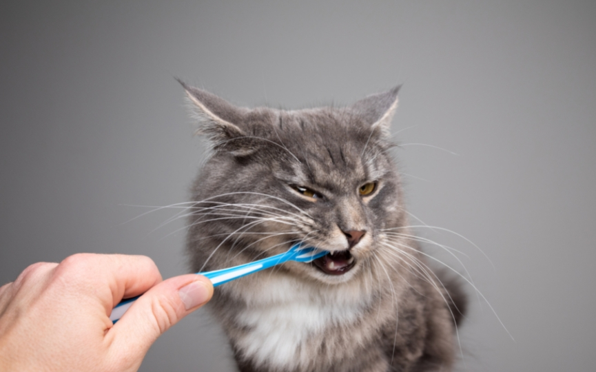

Es necesario someter a nuestro gato a revisiones periódicas con el fin de controlar los síntomas de la enfermedad periodontitis felina. Revisar la dentadura de sus gatos es algo bastante complicado para muchos propietarios y al mismo tiempo muy necesario. Muchos animales pueden presentar un deterioro importante de los dientes, incluso viviendo en casa.
¿Qué es la periodontitis?
La periodontitis es una enfermedad inflamatoria en donde el componente bacteriano tiene una participación fundamental. En la cavidad oral existen bacterias de forma natural que, en principio, no deberían suponer ningún problema. La acumulación de las mismas durante un largo periodo de tiempo, unidas a los restos de comida y saliva, forman una película llamada placa bacteriana. Esta patología se produce por una respuesta del propio individuo a la presencia de la misma. La periodontitis comienza cuando las bacterias presentes en la boca forman placa bacteriana sobre la superficie dental. Al cabo de un periodo corto de tiempo, los minerales presentes en la saliva se adhieren a la placa formando el cálculo dental (sarro). Las bacterias siguen avanzando por debajo de las encías, causando inflamación, que en fases iniciales se conoce como gingivitis. Una vez debajo de las encías, las bacterias continúan afectando al periodonto, que es el tejido que da soporte a los dientes, causando pérdida de hueso alveolar y de ligamento periodontal generando movilidad, pérdida dental o abscesos. En fases más avanzadas se pueden producir comunicaciones con la cavidad nasal, afecciones oculares o como ya hemos explicado anteriormente afectación de otros órganos y sistemas.
¿CÓMO TRATAR LA PERIODONTITIS EN GATOS?
El tratamiento de esta enfermedad tiene varios frentes. El primero es reducir la inflamación y aliviar el dolor, algo que debe hacerse de forma rápidaya que muchos gatos pueden tener dificultad para comer y cambios en su comportamiento, mostrándose huidizos o agresivos. Esto suele lograrse con medicación. El tratamiento médico se administra con el fin de mejorar la calidad de vida hasta la cirugía. En esta se procede a la limpieza de boca con anestesia general, lo que es de gran ayuda ya que permite retirar el sarro y la placa de las piezas dentales, especialmente debajo de la encía. En algunos casos donde el acúmulo de sarro sea muy grande puede ser necesario extraer alguna pieza dental. En la mayoría de casos estas extracciones se planifican previamente ya que los gatos tienden a acumular menos placa que los perros, por lo que durante la revisión en consulta pueden observarse signos como exposición de la raíz, caries o fracturas de piezas. En algunos gatos puede llegar a ser necesario extraer gran parte de las piezas, aunque la recuperación suele ser rápida.

¿CÓMO TRATAR LA PERIODONTITIS EN GATOS?
El tratamiento de esta enfermedad tiene varios frentes. El primero es reducir la inflamación y aliviar el dolor, algo que debe hacerse de forma rápidaya que muchos gatos pueden tener dificultad para comer y cambios en su comportamiento, mostrándose huidizos o agresivos. Esto suele lograrse con medicación. El tratamiento médico se administra con el fin de mejorar la calidad de vida hasta la cirugía. En esta se procede a la limpieza de boca con anestesia general, lo que es de gran ayuda ya que permite retirar el sarro y la placa de las piezas dentales, especialmente debajo de la encía. En algunos casos donde el acúmulo de sarro sea muy grande puede ser necesario extraer alguna pieza dental. En la mayoría de casos estas extracciones se planifican previamente ya que los gatos tienden a acumular menos placa que los perros, por lo que durante la revisión en consulta pueden observarse signos como exposición de la raíz, caries o fracturas de piezas. En algunos gatos puede llegar a ser necesario extraer gran parte de las piezas, aunque la recuperación suele ser rápida.